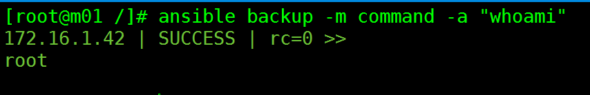
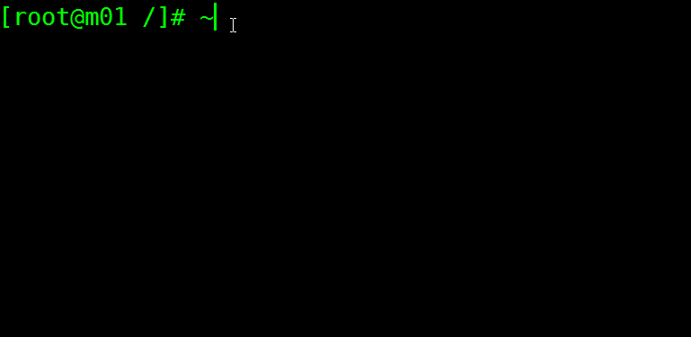

Ansible的基础模块
Ansible的command模块
这个模块是Ansible比较简单的模块，但是需要注意的是Ansible的command并不支持”>”,”<”,”|”,”;”,”&”，官方文档也给了比较明确的替代方案，就是使用shell模块来代替,command模块是默认执行的模块
ansible node1 -m command -a whoami

| 参数 | required | comments |
|---|---|---|
| chdir | no | 运行命令前先进入到这个目录 |
| creates | no | 如果这个参数的文件存在，则不运行命令 |
| executable | no | 将shell切换成command执行 |
| removes | no | 如果这个参数的文件不存在，则不运行这个命令 |
常用的mv，cp，rm命令其实都支持。但是Ansible推荐使用file模块来代替。

Ansible的copy模块
Copies files to remote locations
复制文件到远程机器
copy模块是用来复制文件到远程主机的，类似scp。最简单的copy模块的使用方法是：
ansible backup -m copy -a "src=/backup/demo.txt dest=/tmp"
ansible backup -a "ls -l /tmp/demo.txt"
172.16.1.42 | SUCCESS | rc=0 >>
-rw-r--r-- 1 root root 0 Aug 28 18:45 /tmp/demo.
| 参数名 | comments |
|---|---|
| src | 复制到远程主机的文件的路径，可以是相对路径，如果是一个目录，会递归的复制目录下的内容，如果路径的结尾包含一个/就复制目录下的内容而不复制目录。如果路径的结尾不包含/，会将目录本身也复制过去。 |
| dest | 复制到远程主机的路径，如果复制过去的是个目录，那么远程主机的地址也是一个目录 |
| owner | 指定文件属于哪个用户 |
| mode | 修改文件的权限，类似chmod 744 |
| group | 修改文件的属组 |
| force | 如果目标主机包含该文件，但内容不同，如果设置为yes，则强制覆盖，如果设置为no，则只有当目标主机的目标位置不存在该文件时，才复制。默认为yes |
| content | content里面的内容会被复制到dest的文件中 |
| backup | 创建一个备份用时间戳作为文件名的备份文件 默认是no |
可以从远程复制到本地，也可以从本地复制到远程。
将本地的/tmp目录下demo.txt复制到backup服务器上的backup目录，权限是600，用户是wen
将本地的/var/www/目录复制到backup服务器上的backup下
ansible backup -m copy -a "src=/var/www dest=/backup"
ansible backup -a "ls -ld /backup/www"
172.16.1.42 | SUCCESS | rc=0 >>
drwxr-xr-x 2 root root 4096 Aug 28 19:56 /backup/www
这里需要注意的是关于复制时的/问题，加上/就是将目录下面的内容复制过去，不加/，会将目录本身一起复制过去
Ansible的shell模块
shell模块与command模块的区别不大，只是shell模块是支持管道符的
ansible backup -m shell -a "rpm -qa|grep 'ssh'"
172.16.1.42 | SUCCESS | rc=0 >>
openssh-clients-5.3p1-122.el6.x86_64
openssh-5.3p1-122.el6.x86_64
openssh-server-5.3p1-122.el6.x86_64
libssh2-1.4.2-2.el6_7.1.x86_64
shell模块还可以运行脚本。
Ansible的scripts模块
scripts 模块是将本地的脚本先复制到远程主机，然后在远程主机上运行的
ansible backup -m script -a "/server/scripts/cowsay.sh"
Ansible的file模块
Ansible的文件模块，主要是用来操作文件的相关操作。可以为文件创建连接
| 参数 | 含义 |
|---|---|
| path | 定义文件或者目录的存放位置 |
| group | 定义文件的属组 |
| mode | 定义文件的权限 |
| owner | 定义文件的属主 |
| recurse | 递归设置文件的属性，只对目录有效 |
| src | 被连接的源文件 |
| dest | 被连接的源文件 |
| state | directory：如果目录不存在就创建目录；file 即使文件不存在，也不会创建；link创建一个软链接；hard 创建一个硬链接；touch 如果文件不存在就会创建一个新文件，如果文件存在就会更新最后修改时间；absent：删除目录，文件，软链接 |
在远端服务器上创建一个新文件/backup/demo.txt
修改远端服务器上的新文件/backup/demo.txt的属主为wen，权限为600
ansible backup -m file -a "path=/backup/demo.txt mode=600 group=wen owner=wen"
ansible backup -a "ls -l /backup"
172.16.1.42 | SUCCESS | rc=0 >>
total 0
-rw------- 1 wen wen 0 Aug 28 22:11 demo.txt
为backup服务器上新创建的demo.txt文件创建一个软链接文件demo_soft
设置一个定时任务每分钟先/backup/demo.txt文件输入一个“hello”
ansible backup -m cron -a 'name=test month=* minute=* hour=* day=* weekday=* job="/bin/echo "hello" >> /backup/demo.txt"'
Ansible的user模块
| 参数 | 含义 |
|---|---|
| comment | 对用户的描述 |
| uid | 指定用户的uid |
| state | 设定帐号的状态：默认为创建，absent为删除 |
| shell | 指定登录的默认shell |
| password | 指定用户的密码 |
| name | 指定用户名 |
| move_home | 试图移动用户的主目录 |
| group | 指定基本组 |
| createhome | 是否创建家目录 |
创建一个用户test，不设置用户的家目录，id号是888
ansible backup -m user -a "name=test uid=888 shell=/sbin/nologin createhome=no"
ansible backup -a "tail -1 /etc/passwd"
172.16.1.42 | SUCCESS | rc=0 >>
test:x:888:888::/home/test:/sbin/nologin